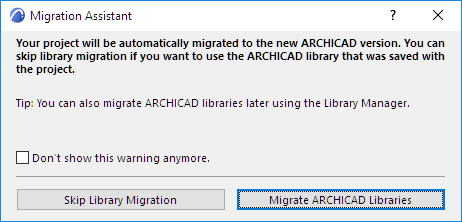
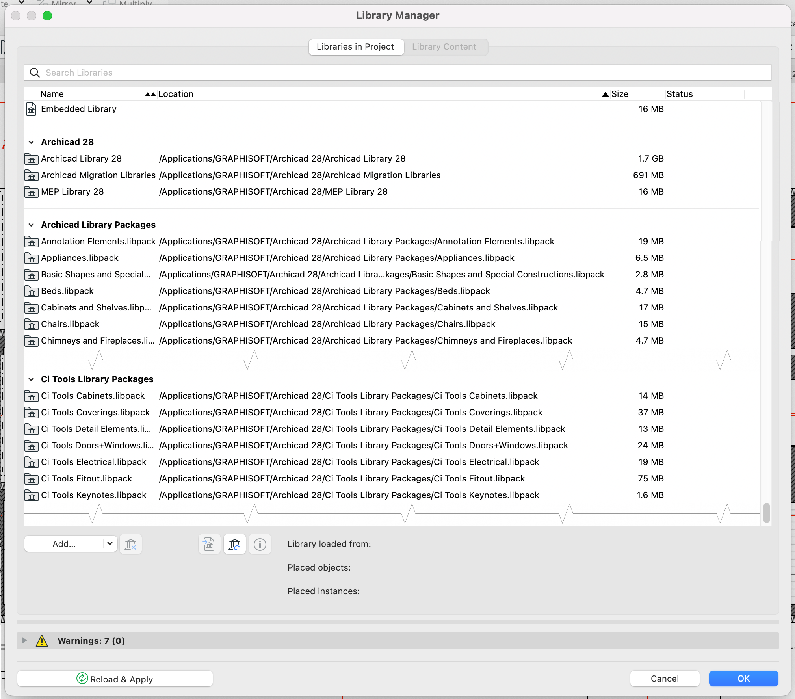
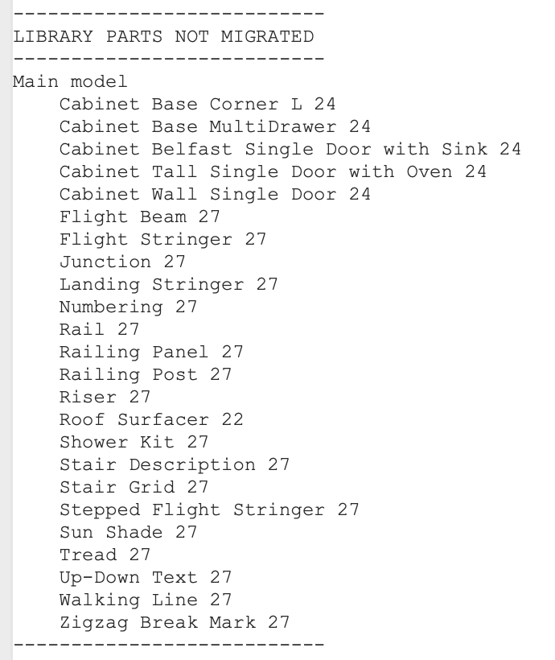
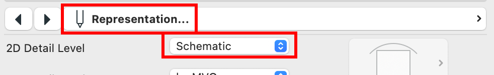

Launchpad · 启动台
- 01把项目库从 27 迁移到 Global LibrariesMigrating project Libraries from 27 to Global Libraries
- 02Launchpad 发布网络研讨会（2024 年 11 月）Launch Pad Release Webinar - November 2024
把项目库从 27 迁移到 Global Libraries
Migrating project Libraries from 27 to Global Libraries
Ci Launchpad 工具新增了一项功能，可以把 Archicad 27 项目从旧式「monolith」库（即「Archicad Library 27」文件夹）自动迁移到新式 Global Libraries（即加载一组 .libpack 文件）。
不过在讲具体操作之前，请先读一读「为什么要迁移」这一节——多数情况下你根本不需要迁移，迁了反而可能给自己找麻烦。
我该迁移库吗？
多数情况下，只需用 Archicad 28 打开项目，在它询问时点「Migrate Libraries」即可。

这样得到一个可正常工作的 v28 项目，继续用旧库干下去，不会有多余的麻烦。
对大多数人来说就该这么做。这是 Graphisoft 的建议，也是我们的建议。
只有当你开始在 v28 里新建第一个项目时，才会开始使用 Global Libraries。
如果你属于这种情况，就不需要这个新迁移功能，本文可以到此为止了。
不过——有些情况下，你可能出于某种原因需要对项目做「完整」迁移。比如项目尚处于早期、预计要跨越多个未来的 Archicad 版本；或者你有一套预先画好的建筑「骨架」库（或其中一部分），在所有项目（包括还没开始的新项目）中都会用到。
如果是这类情况，Launchpad 工具的这个新功能就是为你准备的。
使用迁移功能前的须知
在考虑做完整的 Global Libraries 迁移之前，强烈建议先读 Graphisoft 这篇指南：Archicad 28 迁移：从整体式库转换到全局库体系
文中「路径 1」如前所述就是不迁移库；我们这里关注的是「路径 2」。
Ci Launch 迁移工具实际上会替你完成该流程的第 5、6 步，另外还需要按下文说明对第 1 步稍作调整。
执行迁移
- 首先，把项目当前状态备份一份，以便需要时可以回退。
- 然后用 Archicad 28 打开项目。
- 如有询问，选择「Migrate Archicad Libraries」。
- 项目打开后，打开 Library Manager。
- 把标准的 Global Libraries 一组库加载进来，同时把 Ci Tools 的库包也加上：
- 不确定要加载哪些 Global Library 文件的话，可以在此查看你所在地区的默认库。
- Ci Tools 库就在你 Archicad 28 文件夹里的 Ci Tools Library Packages 文件夹中，把里面的文件全部添加进来。
- 加好后，旧库（Archicad Library 28）、新 libpack、Ci Tools libpack 应同时加载——应如下图所示。这会产生大量重复警告（约 1 万条）——没关系，重复对象马上就会清理。

- 库全部加载后，进入 Ci Tools 菜单 - Launchpad - Migrate Missing Library Parts。
- 询问是否迁移所有图元时点 OK。
- 完成后再次打开 Library Manager，此时把「monolith」库移除——包括 Archicad Library 28、MEP Library 28、Migration Libraries 等。
- 库部件迁移至此完成，你可以继续走转换流程，从第 2 步开始，跳过第 5、6 步（已完成）。
其他注意事项
库部件迁移工具目前无法迁移楼梯（Stair）图元，也无法迁移新 Global Library 中已不存在的对象。
尤其是那些用了很久、但早就从 Archicad 库里淘汰的对象会成问题（比如我们注意到不少 Archicad 24 时代的 Cabinet 对象）。
工具跑完项目后，会把所有无法迁移的对象输出到报告窗口（File - Info - Session Report）。你可以据此决定这些无法迁移的图元怎么处理——换成近似的替代对象，或者干脆把旧对象内嵌进项目。

我们还注意到，Archicad 28 库中有不少对象迁移后会重置部分设置。具体来说，相当多家具对象的 2D Representation（二维表达）设置会从「By MVO」变成「Schematic」。

如果遇到这种情况，建议打开一个全部图层可见的 3D 视图，选一个受影响的对象，然后用对象工具加键盘快捷键全选所有对象（Select All Objects）。再进入设置，把 2D Representation 改成你要的值，点 OK。所有使用该设置的对象都会一起更新。
以下视频也演示了这个过程：
The Ci Launchpad tool contains a new function to allow you to automatically migrate Archicad 27 projects from using the old style 'monolith' libraries (i.e. the "Archicad Library 27" folder) to the new style Global Libraries (i.e. loading the collection of .libpack files).
Before going into the detail on how to do this though, first, please read this section on Why you might want to do it, since in most cases, you very likely don't need to, and would only be causing potential trouble for yourself by doing it.
Should I migrate my libraries?
In most cases, simply opening your project in Archicad 28 and hitting the "Migrate Libraries" option if/when it asks you about it is all you need to do.
This will give you a working project in v28 that you can continue working on using the old libraries with no additional trouble.
For most people, this is what you should do. This is what Graphisoft recommends, and it's what we recommend too.
The only time you will start using Global Libraries is when you start your first New project in v28.
So if that applies to you, you don't need this new migration function, and you can pretty much stop reading this now.
However - in some cases, you may, for whatever reason, need to do a 'full' migration of a project. For instance - if your project is early on in its life, and you anticipate it will continue through multiple future Archicad versions. Or possibly you have a library of pre-drawn building 'skeletons' or parts of them which you use in all project (including new ones that haven't started yet).
If you are in a situation like that, then this new Function in the Launchpad tool is for you.
Things to know before using the Migration function
Before you even contemplate doing full migrations to Global Libraries, I would very strongly recommend reading this guide from Graphisoft: Archicad 28 Migration: Converting from Monolithic Libraries to the Global Library System
In that document, Path 1 is, as mentioned, to just not migrate libraries, but Path 2 is what we are concerned with here.
The Ci Launch Migration tools will effectively do steps 5 and 6 of that process for you, and we also will need to slightly modify Step 1 as detailed below.
Running the Migration
- First, save a backup of the project as it currently is, so you can go back if you need to
- Then open your project in Archicad 28
- If asked, choose the option to Migrate Archicad Libraries
- Once the project is open, open the Library Manager
- Add the standard set of Global Libraries there, and also add the Ci Tools library packages
- If you aren't sure which Global Library files to load, you can check the Default libraries for your region here
- For the Ci Tools Libraries, just find the Ci Tools Library Packages folder in your Archicad 28 folder, and add all the files inside it
- When done, you should have the old libraries (Archicad Library 28), new libpacks, and Ci Tools libpacks all loaded at once - it should look like the image below. This will produce a large amount of duplicate warnings (i.e. about 10,000) - this is fine, as we will be removing the duplicated objects very soon.
- Once the libraries are all loaded - got to the Ci Tools menu - Launchpad - Migrate Missing Library Parts
- Click OK when asked if you want to migrate all elements
- Once the process is complete, open your Library Manager again, and now Remove the 'Monolith' libraries - so that means Archicad Library 28, MEP Library 28, Migration Libraries etc...
- Your library part migration is now done, so you can continue through the Conversion workflow, starting with Step 2, and skipping steps 5, and 6, as those have already been done now.
Additional Considerations
The Library Part Migration tool is not able to migrate any Stair elements currently, nor is it able to Migrate any objects that no longer exist in the new Global Library.
In particular, this will be a problem if you have objects that you've been using for a while, but that were discontinued out of Archicad's library some time again (we have noticed a lot of Cabinet objects from Archicad 24, for instances).
After our tool runs through your project, it will output a record of all the objects that it was unable to migrate into your Report Window (File - Info - Session Report). You can use this as a reference to decide what you want to do with these non-migratable elements - either swapping them to similar replacement objects, or perhaps just embedding the old objects in the project.
We have also noticed that a number of objects in the Archicad 28 library, when migrated, will reset some settings. Specifically, quite a few Furniture objects will change their 2D Representation setting from "By MVO" to "Schematic"
If this happens for you, I would recommend opening a 3D view with all layers on, selecting one of the affected objects, and then using the object tool and keyboard shortcut to Select All Objects. Then go into the settings, change the 2D Representation to what you want, and hit OK. This will update every object that uses that setting.
This process is also documented in the video below:
英文原文对照Official English Original
The Ci Launchpad tool contains a new function to allow you to automatically migrate Archicad 27 projects from using the old style 'monolith' libraries (i.e. the "Archicad Library 27" folder) to the new style Global Libraries (i.e. loading the collection of .libpack files).
Before going into the detail on how to do this though, first, please read this section on Why you might want to do it, since in most cases, you very likely don't need to, and would only be causing potential trouble for yourself by doing it.
Should I migrate my libraries?
In most cases, simply opening your project in Archicad 28 and hitting the "Migrate Libraries" option if/when it asks you about it is all you need to do.
This will give you a working project in v28 that you can continue working on using the old libraries with no additional trouble.
For most people, this is what you should do. This is what Graphisoft recommends, and it's what we recommend too.
The only time you will start using Global Libraries is when you start your first New project in v28.
So if that applies to you, you don't need this new migration function, and you can pretty much stop reading this now.
However - in some cases, you may, for whatever reason, need to do a 'full' migration of a project. For instance - if your project is early on in its life, and you anticipate it will continue through multiple future Archicad versions. Or possibly you have a library of pre-drawn building 'skeletons' or parts of them which you use in all project (including new ones that haven't started yet).
If you are in a situation like that, then this new Function in the Launchpad tool is for you.
Things to know before using the Migration function
Before you even contemplate doing full migrations to Global Libraries, I would very strongly recommend reading this guide from Graphisoft: Archicad 28 Migration: Converting from Monolithic Libraries to the Global Library System
In that document, Path 1 is, as mentioned, to just not migrate libraries, but Path 2 is what we are concerned with here.
The Ci Launch Migration tools will effectively do steps 5 and 6 of that process for you, and we also will need to slightly modify Step 1 as detailed below.
Running the Migration
- First, save a backup of the project as it currently is, so you can go back if you need to
- Then open your project in Archicad 28
- If asked, choose the option to Migrate Archicad Libraries
- Once the project is open, open the Library Manager
- Add the standard set of Global Libraries there, and also add the Ci Tools library packages
- If you aren't sure which Global Library files to load, you can check the Default libraries for your region here
- For the Ci Tools Libraries, just find the Ci Tools Library Packages folder in your Archicad 28 folder, and add all the files inside it
- When done, you should have the old libraries (Archicad Library 28), new libpacks, and Ci Tools libpacks all loaded at once - it should look like the image below. This will produce a large amount of duplicate warnings (i.e. about 10,000) - this is fine, as we will be removing the duplicated objects very soon.
- Once the libraries are all loaded - got to the Ci Tools menu - Launchpad - Migrate Missing Library Parts
- Click OK when asked if you want to migrate all elements
- Once the process is complete, open your Library Manager again, and now Remove the 'Monolith' libraries - so that means Archicad Library 28, MEP Library 28, Migration Libraries etc...
- Your library part migration is now done, so you can continue through the Conversion workflow, starting with Step 2, and skipping steps 5, and 6, as those have already been done now.
Additional Considerations
The Library Part Migration tool is not able to migrate any Stair elements currently, nor is it able to Migrate any objects that no longer exist in the new Global Library.
In particular, this will be a problem if you have objects that you've been using for a while, but that were discontinued out of Archicad's library some time again (we have noticed a lot of Cabinet objects from Archicad 24, for instances).
After our tool runs through your project, it will output a record of all the objects that it was unable to migrate into your Report Window (File - Info - Session Report). You can use this as a reference to decide what you want to do with these non-migratable elements - either swapping them to similar replacement objects, or perhaps just embedding the old objects in the project.
We have also noticed that a number of objects in the Archicad 28 library, when migrated, will reset some settings. Specifically, quite a few Furniture objects will change their 2D Representation setting from "By MVO" to "Schematic"
If this happens for you, I would recommend opening a 3D view with all layers on, selecting one of the affected objects, and then using the object tool and keyboard shortcut to Select All Objects. Then go into the settings, change the 2D Representation to what you want, and hit OK. This will update every object that uses that setting.
This process is also documented in the video below: